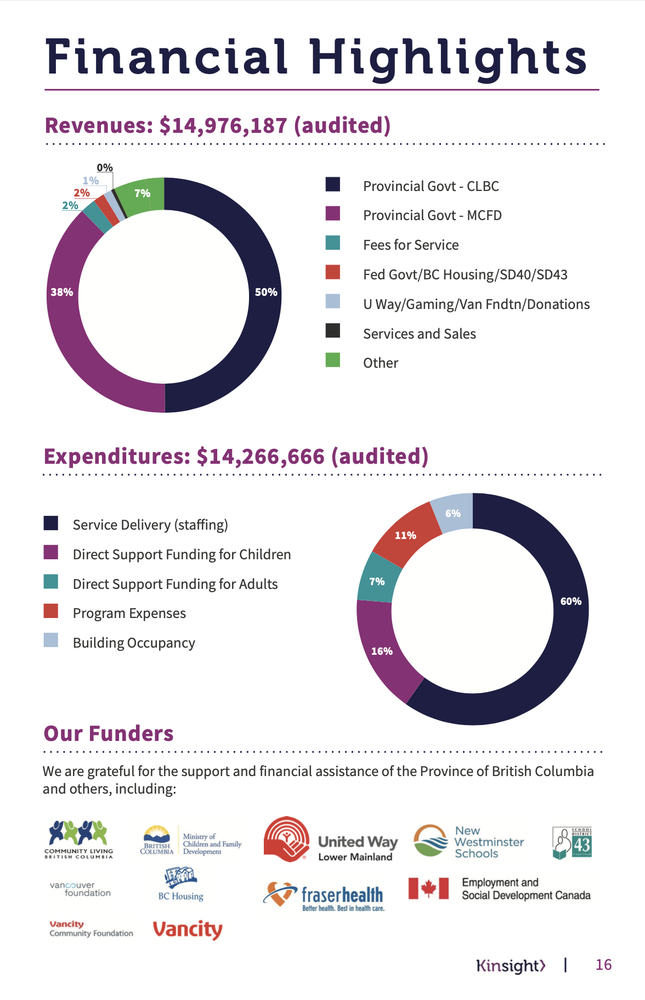
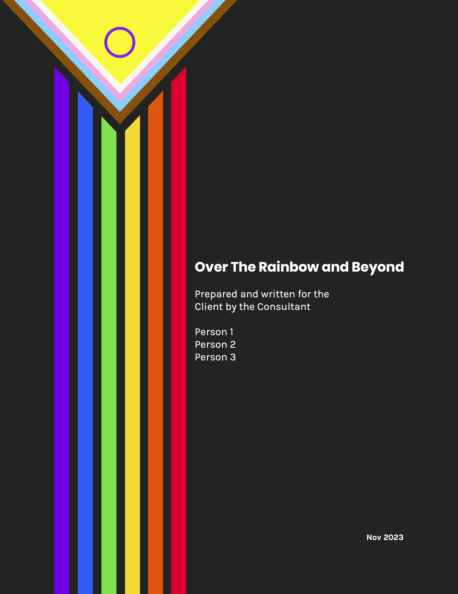
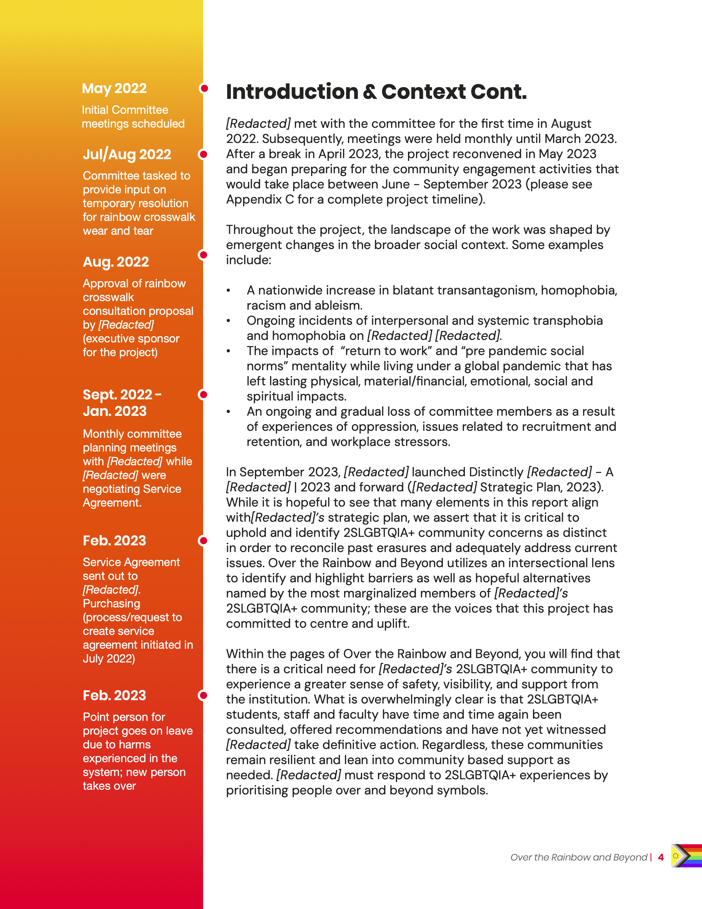
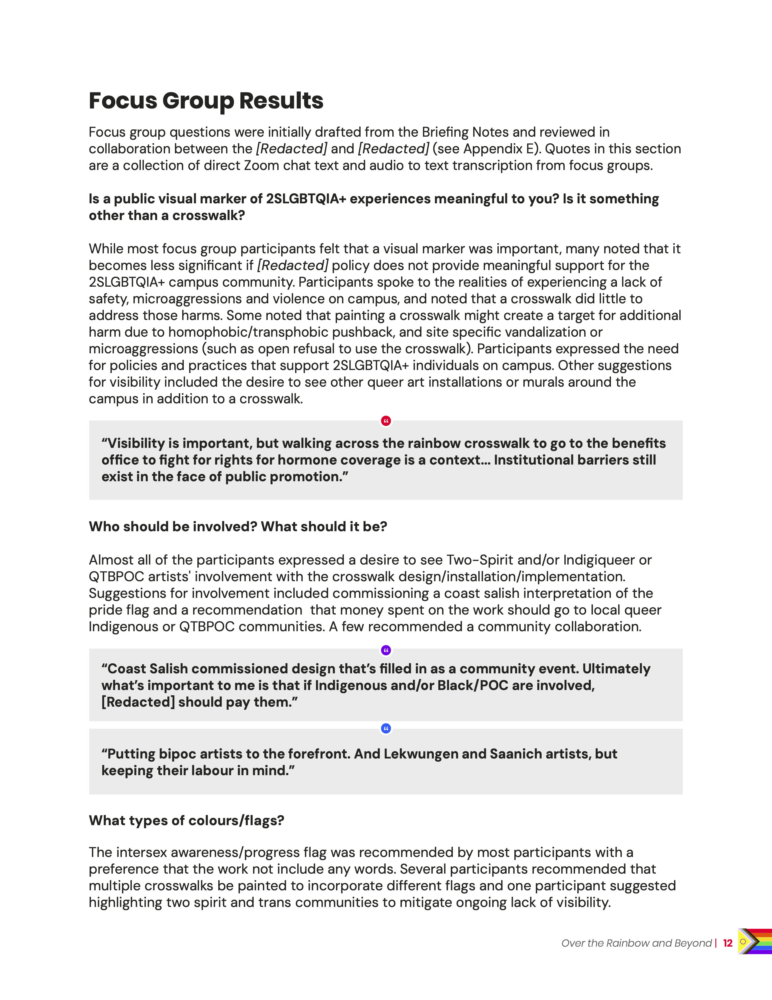
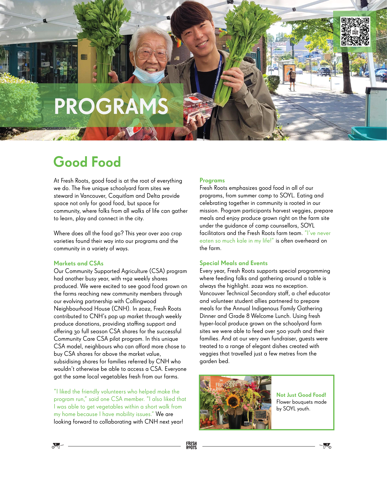
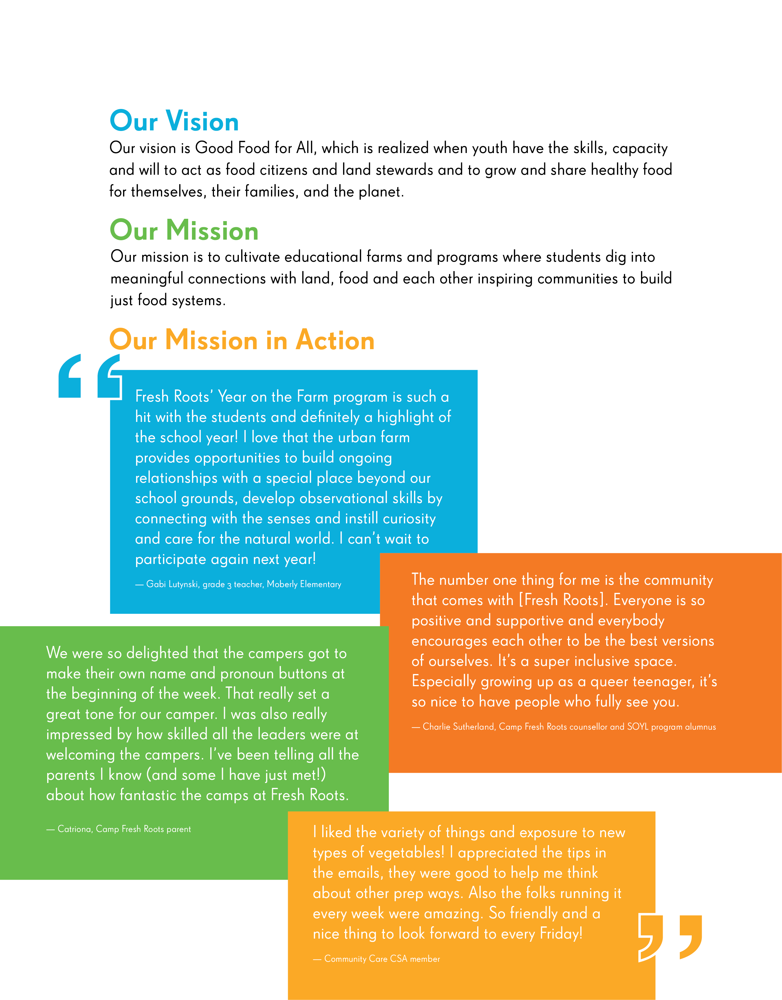

- Kinsight Annual Report, Selected Spreads
'Kinsight' is a non-profit organization that supports youth and adults with physical and mental disabilities to have fulfilling relationships and meaningful lives. They provide services such as assisted living, supported employment opportunities, play centres, and serve the communities located in New Westminster and the Tri-Cities, British Columbia. With Kinsight I created engaging and creative designs while adhering to set brand guidelines and had the honour of photographing their clients.


- Research Report: Over the Rainbow and Beyond, Selected Pages
'Over the Rainbow and Beyond' is the culmination of vigorous, but intentional research. The goal of this community consultation project was to address larger questions of safety, inclusion and accessibility for 2SLGBTQIA+ campus communities. The client and consultant are removed in the selected spreads at the consultant’s request. Using their data and research, I went through several feedback sessions to capture the essence of the research, client, and consultant’s energy while maintaining a readable and professional reporting style.
   - Fresh Roots Annual Report, Selected Pages
'Fresh Roots' is a non-profit organization based in Vancouver, BC. Fresh Roots cultivates food education in youth with hands-on events and workshops. Through various programs, youth learn how to grow food, share food with communities, and learn about the lands in which their food comes from. I created the Fresh Roots annual report for three consecutive years in a row, pushing their branding guidelines to a cleaner, updated look.
 